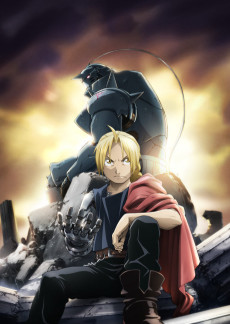
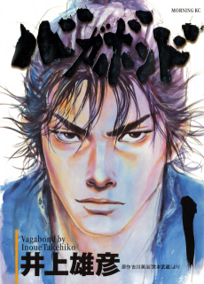

Today’spick
Today’spickFrieren: Beyond Journey’s EndThe hero’s party has won. The elf who will outlive them all sets out to learn what the journey meant.
Plan to watch
Anime · 2023 · TV · 28 epsL2 in your clubs ›
Today Discover is a magazine you can only read. In this direction it answers every touch. Every card has one tap (open) and one key (Plan). Everything else sits behind a long press that lifts the title into a preview. A key flips the moment you touch it. Removals happen in front of you, and the next title settles into the gap. Every action can be undone from the toast. Coming back is rewarded too: “new since your last visit” marks, progress through the canon, and an index that fills in as you read. The page ends with “You’re caught up for today.”
Built on Home’s grammar and the shipped daily issue (canvas #FFFEF8 / #F5F5F3, ink #252625, TastePlanKey, scene-card foot on ArtworkMaterial, the shipped toast). Artwork comes from the AniList CDN (metadata fetched from AniList today) and the prototype assets. Each frame obeys R2: no series appears twice on one page. The n orange pins are annotations, not UI. Each number is a build item.
Four mood keys sit under the issue switch: physical light-face keys that press in on touch. The cover story keeps its Plan key and gains an ANIME label because the page mixes media. “In this issue” becomes a numbered list of jump links (↓), each showing its count or how many titles are new since your last visit. The airing-today glance moves into This season so the top stays short.
Items 4 · 10 · 11 · 8 (counts) · R1 R6
Today’spickOnce the contents list scrolls away, it pins under the header as a one-line index. Sections you have passed turn ink, the current one carries the 28 × 2 mark, and a small dot shows a section that still has new titles. Tapping “Discover” in the header scrolls back to the top. Every section says what it is for in one line. Cards that are new since your last visit carry a NEW tab in the season-tab style, and every card has its own Plan key below the cover, never on the artwork.
Items 2 (keys) · 6 · 8 · 10 · 11 · R1 R3 R8
Anime you haven’t seen or hidden. Picked fresh each morning.

 AnimeODDTAXI2021 · TV · 13 epsPlan to watch
AnimeODDTAXI2021 · TV · 13 epsPlan to watch NewAnimeHeavenly Delusion2023 · TV · 13 epsPlan to watch
NewAnimeHeavenly Delusion2023 · TV · 13 epsPlan to watch NewAnimePing Pong the Animation2014 · TV · 11 epsPlan to watch
NewAnimePing Pong the Animation2014 · TV · 11 epsPlan to watchAiring now. 6 new episodes are out today.
 NewAnimeKaiju No. 8Ep. 7 out todayPlan to watch
NewAnimeKaiju No. 8Ep. 7 out todayPlan to watch AnimeThe Apothecary DiariesEp. 5 on SatPlanned
AnimeThe Apothecary DiariesEp. 5 on SatPlanned NewAnimeBLUE LOCKEp. 3 out todayPlan to watch
NewAnimeBLUE LOCKEp. 3 out todayPlan to watchA long press anywhere on a title (Discover cards, See all cards, Home-grammar rails) opens the system context menu with a preview. The preview shows the artwork on its own material, the facts, three lines of synopsis and the reason the title is here. Tapping the preview opens the title. Below it, five actions in a fixed order: Plan to watch, Seen it, Not interested, Add to Club…, Open. Not interested stays in ink because red is kept for delete and leave. A medium haptic fires as the preview lifts.
Items 2 · 3 · R3 R5
Anime you haven’t seen or hidden. Picked fresh each morning.
AnimeODDTAXI2021 · TV · 13 epsPlan to watchNewAnimeHeavenly Delusion2023 · TV · 13 epsPlan to watch
Two childhood friends play table tennis. One has talent and doesn’t care, the other cares about nothing else. A sports show about what winning costs.
Why it’s here: New to you · unseen by you, finished, 11 episodesPing Pong is gone the moment you choose Not interested. Its card shrinks and fades in 120 ms, the gap closes in 220 ms, and the next unseen title (Barakamon) settles into the slot. The See all count drops from 48 to 47, and the heading marker drops from 2 new to 1 new. A rigid haptic marks the removal. The shipped toast says what happened and offers Undo, which puts the title back in the same slot. The Taste signal (‘pass’) is sent through the TasteStore outbox, and the title stays hidden on every launch and every Discover page.
Items 3 · R4 R5
Anime you haven’t seen or hidden. Picked fresh each morning.
AnimeODDTAXI2021 · TV · 13 epsPlan to watchNewAnimeHeavenly Delusion2023 · TV · 13 epsPlan to watch AnimeBarakamon2014 · TV · 12 epsPlan to watch
AnimeBarakamon2014 · TV · 12 epsPlan to watchAiring now. 6 new episodes are out today.
NewAnimeKaiju No. 8Ep. 7 out todayPlan to watchAnimeThe Apothecary DiariesEp. 5 on SatPlannedNewAnimeBLUE LOCKEp. 3 out todayPlan to watchSeen it removes the title (Laid-Back Camp, not shown) and records Taste ‘known’. It never writes a list status by itself. The toast has one extra action, “Add as Completed ›”, which opens the tracking editor as a tool with Completed preselected and returns to Discover. This adds one optional action to the shipped toast (message, Undo, ×). Trending marks titles you already track with their status word (86 EIGHTY-SIX: Completed) instead of hiding them. The local filter words are plain: “Up to 13 episodes” matches the shipped rule (≤ 13).
Items 3 · 6 · R2 (mark) · R4 R6
What people on Kuro started this week.
 AnimeBOCCHI THE ROCK!2022 · TV · 12 epsPlan to watch
AnimeBOCCHI THE ROCK!2022 · TV · 12 epsPlan to watch AnimeGirls' Last Tour2017 · TV · 12 epsPlan to watch
AnimeGirls' Last Tour2017 · TV · 12 epsPlan to watch Anime86 EIGHTY-SIX2021 · TV · 11 epsCompleted
Anime86 EIGHTY-SIX2021 · TV · 11 epsCompleted AnimeKaguya-sama: Love is War2022 · TV · 13 epsPlan to watch
AnimeKaguya-sama: Love is War2022 · TV · 13 epsPlan to watchEssential lists show how far into the canon you are: “You’ve seen 3 of 8”, with eight segments (completed filled, the one you are watching half-filled). Titles you track keep their row and show their status word. Steins;Gate was just planned: the key turned dark at once, and after the save was confirmed the “Saved” stamp played and the shipped toast appeared. The section still owns the page: Monster is not repeated in Trending or Classics.
Items 9 · 2 (Plan) · R2 (mark) · R4
Eight titles to know anime by. Ours, not a ranking.
 Cowboy Bebop1998 · TV · 26 epsCompleted
Cowboy Bebop1998 · TV · 26 epsCompleted
Fullmetal Alchemist: Brotherhood2009 · TV · 64 epsCompleted Monster2004 · TV · 74 epsWatching · 41/74
Monster2004 · TV · 74 epsWatching · 41/74 Spirited Away2001 · FilmCompleted
Spirited Away2001 · FilmCompleted Steins;Gate2011 · TV · 24 epsPlannedSaved
Steins;Gate2011 · TV · 24 epsPlannedSavedManga you haven’t read or hidden. Picked fresh each morning.

The page ends after six sections. There is no more “Show 8 more sections” fold. The rest becomes three “More lists” links that open their See all journeys. The end gives a short tally of what you did today (planned, hidden) as a reward for finishing. Then two exits: Browse, and Search. In the pinned index every section is now ink: you have read the whole issue.
Items 7 · 10 · R7
 Akira1988 · FilmPlan to watch
Akira1988 · FilmPlan to watch Natsume’s Book of Friends2008 · TV · 13 epsPlan to watch
Natsume’s Book of Friends2008 · TV · 13 epsPlan to watch6 sections, 35 titles. You planned 2, hid 1 and marked 1 as seen.
A new issue tomorrow morning.
See all opens as a journey (✕ only at the root, N3). It has three sorts (Popular, Newest, Top rated), quick filters in plain words with a clear selected state and × to remove, a live match count, a Plan key on every card, the same long-press preview, and infinite paging where the source pages (Trending, Top rated and Just added use Browse’s paging; curated lists sort locally). Titles you track carry their status word. Tapping a card pushes the title inside this journey, and Back returns here at the same scroll position.
Items 5 · 2 · 6 · R3 R6 R8
What people on Kuro started this week. 214 titles.
38 match · Clear filters
BOCCHI THE ROCK!2022 · TV · 12 epsPlan to watch SavedNatsume’s Book of Friends2008 · TV · 13 epsPlannedGirls' Last Tour2017 · TV · 12 epsPlan to watch
SavedNatsume’s Book of Friends2008 · TV · 13 epsPlannedGirls' Last Tour2017 · TV · 12 epsPlan to watch ERASED2016 · TV · 12 epsCompleted86 EIGHTY-SIX2021 · TV · 11 epsPlan to watchKaguya-sama: Love is War2022 · TV · 13 epsPlan to watch
ERASED2016 · TV · 12 epsCompleted86 EIGHTY-SIX2021 · TV · 11 epsPlan to watchKaguya-sama: Love is War2022 · TV · 13 epsPlan to watch The Tatami Galaxy2010 · TV · 11 epsPlan to watchBarakamon2014 · TV · 12 epsPlan to watch
The Tatami Galaxy2010 · TV · 11 epsPlan to watchBarakamon2014 · TV · 12 epsPlan to watch Violet Evergarden2018 · TV · 13 epsPlan to watch
Violet Evergarden2018 · TV · 13 epsPlan to watchEach mood key opens a journey page built from data the app already has. Something short uses format, episode count and airing status; Cozy and Intense use taste realms (realm_meta / media_realm_membership); “Like …” uses the favourites seed of Because-you. The page states its rule in one sentence, offers Anime / Manga, and every row has the Plan key and the long-press preview. A title you hid never comes back, here or anywhere on Discover.
Items 4 · 3 (memory) · R1 R5
Finished anime of 13 episodes or fewer, and films. One evening, or one weekend. Nothing you’ve seen or hidden.
 Perfect Blue1998 · Film · one eveningPlan to watch
Perfect Blue1998 · Film · one eveningPlan to watch The Tatami Galaxy2010 · TV · 11 eps · one weekendPlan to watch
The Tatami Galaxy2010 · TV · 11 eps · one weekendPlan to watch Girls' Last Tour2017 · TV · 12 eps · one weekendPlan to watch
Girls' Last Tour2017 · TV · 12 eps · one weekendPlan to watch Barakamon2014 · TV · 12 eps · one weekendPlannedAkira1988 · Film · one eveningPlan to watch
Barakamon2014 · TV · 12 eps · one weekendPlannedAkira1988 · Film · one eveningPlan to watch 86 EIGHTY-SIX2021 · TV · 11 eps · one weekendPlan to watch
86 EIGHTY-SIX2021 · TV · 11 eps · one weekendPlan to watch ERASED2016 · TV · 12 eps · one weekendPlan to watch
ERASED2016 · TV · 12 eps · one weekendPlan to watchPing Pong the Animation is not here because you hid it.
With Anime selected, the cards drop their ANIME labels (they only appear in All). The first contents entry is the personal section, and its name says why it is there: “Because you loved MUSHI-SHI”, from the shipped Because-you rail and its reason_title. The jump index lists this page’s own six sections. Violet Evergarden is today’s anime pick, so it is not repeated in any section below.
Items 4 · 6 · 10 · 1 · R1 R2
 Today’spick
Today’spickThe manga canvas (#F5F5F3) and the manga words: “Plan to read”, “Something short” means up to 3 volumes or a one-shot, and “Like Berserk” comes from the favourites seed. The cover-only lead uses the capped spread. The trio has a Plan key under every cover, and NEW tabs mark what arrived since your last visit.
Items 4 · 2 · 8 · R3

Manga you haven’t read or hidden. Picked fresh each morning.
 NewHirayasumi2021 · MangaPlan to read
NewHirayasumi2021 · MangaPlan to read Pluto2003 · Manga · 65 ch.Plan to read
Pluto2003 · Manga · 65 ch.Plan to read NewBlue Giant2013 · Manga · 80 ch.Plan to read
NewBlue Giant2013 · Manga · 80 ch.Plan to readBeat 1 (0 ms): the face presses in (scale .95, 14 % darker) and flips to the dark “Planned” face as soon as the finger lifts, with a light impact. Beat 2: once LibraryActions.save(.planning) returns, the stamp plays (settle 220 ms), a success haptic fires and the shipped toast “Added to your list.” offers Undo. Failure: .kuroRestore turns the face back, a warning haptic fires and the toast says “Not saved. Your list is unchanged.” The stamp only ever plays after a durable save (Home grammar rule 8).
The title is removed locally before the network call: the hide is applied to the page model at once, and the Taste signal (‘pass’ or ‘known’) is queued in the bounded TasteStore outbox. A rigid haptic marks the removal. The next title from the section’s own reserve fills the slot. When the reserve is empty, the row simply closes up. Undo sends ‘retract’ and plays .kuroRestore, so the card returns to its exact slot.
Long press: the system context menu with preview:. iOS handles the lift, the blur and the haptic. The preview cannot be interacted with; tapping it opens the title (a root journey from the pager, a push inside See all and mood journeys, N9).
Pinned index: it fades in as the contents list scrolls under the header (settle 220). The current mark fades in place and never travels, the same rule as the issue switch. Tapping a word scrolls with KuroMotion.settle.
NEW tabs: they stay for the whole visit and clear on the next visit. They never blink while you read.
Every movement above is decided by KuroMotion.playsMotion(reduceMotion:lowPower:). When motion is off: the key flips without the press scale, the stamp appears without rotating in, a removed card cross-fades out, the gap closes instantly, the refill cross-fades in, and the pinned index appears without a fade. Haptics still follow the system haptics setting. They are feedback, not motion.
VoiceOver: every card has custom actions (Plan, Seen it, Not interested, Add to Club…), so nothing depends on a long press. Removals are announced (“Hidden. Undo available.”). The progress hook reads “You’ve seen 3 of 8 essential anime”.
fetch_because_you_rail.reason_title, a positive Taste seed. “Because you finished X” needs a different seed (the latest Completed from the Library), so it stays a lead decision.DiscoverRailFilter rule: Short means 13 episodes or fewer, so “Under 13” would be wrong. Filters never reset the page or its scroll position.Rule 6: Discover contract. Every change to Discover (the page, See all, mood journeys, or any Discover card) must satisfy R1–R8 in docs/superpowers/specs/2026-11-04-discover-usability-design.md (to be written): one question per section; no series twice on a page; one tap plus one key per card, everything else on long press; instant feedback with Undo; feedback changes the page and teaches Taste; local, plain-word filters; the page ends; your place is kept. Every route from a pager page goes through the pager tap gate.
.contextMenu(menuItems:preview:) with SF Symbols (bookmark, eye, nosign, person.2.badge.plus, arrow.up.forward). No custom gesture recognizer and no interactive preview. “Not interested” is not drawn as destructive (red is reserved for delete and leave).TastePlanToastView, recorded here. It never writes a status by itself.KuroLocale.| # | Item | Frames | How (tactile angle) |
|---|---|---|---|
| 1 | Franchise dedupe + owned rule | all (R2 held in every frame) · 4b, 5 (marks) | A pure DiscoverPagePolicy.dedupe(sections:franchiseKey:owned:), applied in DiscoveryStore once per build. Franchise key = series root from catalogue relations (the same source as the adaptation ladder); seasons group as in SeriesGrouping. Order of precedence as in R2. Owned titles: hidden in New to you / Because-you / Manga new to you / This season; marked in Essentials / Trending / Classics. |
| 2 | Long-press preview | 3 (and every card) | System preview: artwork on its material, facts, 3-line synopsis, “Why it’s here” line. Menu: Plan, Seen it, Not interested, Add to Club…, Open. Used on Discover cards, See all cards and Home-grammar rails on Discover. |
| 3 | Not interested / Seen it → Taste | 3, 4, 4b, 8 | TasteStore.submitSignal(…, .pass / .known), Undo → .retract. Removed at once, refilled, kept hidden across launches (server signal + per-account local cache). Seen it offers “Add as Completed ›” through routes.presentTrackingEditor. |
| 4 | Mood entry points | 1, 8, 9, 10 | Four light-face keys: Something short, Cozy, Intense, Like {favourite}. Each opens a journey page that states its rule. |
| 5 | Real See all | 7 | Sort (Popular / Newest / Top rated), plain-word quick filters with ×, a match count, Plan keys, long press, infinite paging where the source pages. |
| 6 | Purpose subtitles, reasons, clearer filter words | 2, 4b, 5, 9 | A .why line under every heading. The Trending words become “Any length · Up to 13 episodes · Finished”. |
| 7 | End state, fewer folded sections | 6 | Six sections: This season and Classics move up; Essential manga, Top rated and Just added become “More lists” links. Ends with “You’re caught up for today.” plus a tally, Browse and Search. |
| 8 | New since your last visit | 1, 2, 5, 10 | NEW tab on cards, a dot plus “2 new since Sunday” in the heading, and counts in the contents and the pinned index. |
| 9 | Progress on Essentials | 5 | “You’ve seen 3 of 8.” with eight segments; Watching shows as a half segment. |
| 10 | Header tap to top; jump-link contents that pin | 1, 2, 5, 6 | A numbered two-column jump list with ↓. It pins as a 38 pt one-line index, and words turn ink as you pass them. |
| 11 | ANIME / MANGA labels in All | 1–6 | A 7.5 pt tracked kicker above every card title (and in the cover-story fact row), shown in All only. |
| 12 | Telemetry | — (text) | See the telemetry table below. |
| Element | Source | Status |
|---|---|---|
| Plan key on every card | TastePlanController (.tastePlanHost), TasteCard(anime:/manga:) | exists |
| Not interested / Seen it | record_taste_deck_signal(type,id,'pass'|'known') via TasteStore.submitSignal; stored in taste_signal_events | exists (client wiring new) |
| Hidden across launches | Some serving RPCs already exclude deck_love/deck_known (20260806020000_serving_hardening_v1.sql ~l.447). Prepared change: extend the exclusion to deck_pass + deck_known for every Discover section, and add fetch_my_discover_hidden_v1() (ids only, caller-scoped, SET search_path) to hydrate the cache. Local: DiscoverHiddenTitles, per account (AccountScopedState), applied before render. | prepared (not applied) + on-device |
| Franchise key | Catalogue relations / ladder series root; season grouping as SeriesGrouping | exists; a pure policy is new |
| Owned / status words | LibraryStore entries (Folio status words) | exists |
| Progress hook | The Essentials list (full See all list) ∩ Library Completed (plus ‘known’ signals as “seen”); Watching counts as half | on-device |
| NEW markers | DiscoverVisitMemory: per account, per section, a hash of the item ids at the end of the last visit. NEW = not in the last snapshot. The first visit ever shows none. | on-device |
| Something short | Card format, episodes, status (the DiscoverRailFilter.short rule plus MOVIE); manga: volumes ≤ 3 or ONE_SHOT; paged through Browse | exists |
| Cozy / Intense | realm_meta + media_realm_membership (Cozy: slice-of-life-iyashikei, supernatural-yokai; Intense: psychological-thriller, horror-dread, war-military); copy echoes Concierge cozy_comfort | prepared RPC fetch_discover_mood_v1(p_mood, p_media_type, p_limit, p_offset) if Browse cannot filter by realm |
| Like {favourite} | Because-you seed (reason_title) → recommend_ids_similar_to_seeds | exists |
| See all sort / filters / paging | Browse paging (DiscoveryStore) for Trending / Top rated / Just added; curated lists sort locally | exists |
| End tally | The session’s own counts (plans, hides) from the page controller | on-device, session only |
| Moment | Haptic | Motion |
|---|---|---|
| Key touch-down | — | .kuroPressSettle (contact 120) |
| Key flip (instant) | impact light | face swap, no movement |
| Save confirmed | success | .kuroConfirmStamp (settle 220) + toast |
| Save failed | warning | .kuroRestore + “Not saved…” toast |
| Long press | system | system lift |
| Not interested / Seen it | impact rigid | shrink and fade 120 → close 220 → refill .homeEntrance (380) |
| Undo | impact soft | .kuroRestore into the original slot |
| Mood key, jump word, issue word | selection | HomeContactStyle press; scroll with settle |
| Reaching the end | — | the seal fades in once per issue (KuroMotion.playsMotionNow) |
Every event goes through InteractionTelemetry.trackInteractionEvent(_:surface:"discover",result:extra:) (ConciergeAnalytics underneath). Payloads carry section keys, positions, medium and counts only. No titles, no free text, and no new third party.
| Event | result / extra |
|---|---|
discover_visit_end | sections_seen, max_depth_pct, taps, plans, hides, reached_end, dwell bucket |
discover_plan | added / removed / failed · section, position, source (card / preview / see_all / mood) |
discover_not_interested | hidden / undone · section, position |
discover_seen_it | marked / completed_via_editor / undone |
discover_preview | open / plan / seen / hide / club / dismissed |
discover_open_bounce | the title journey closed within 10 s · section, position |
discover_jump | contents / pinned / header_top · target section |
discover_mood_open, discover_see_all | mood key · section, sort, filter count, pages loaded |
| Where | English | Deutsch |
|---|---|---|
| Menu | Plan to watch / Plan to read · Seen it / Already read · Not interested · Add to Club… · Open | Vormerken · Schon gesehen / Schon gelesen · Kein Interesse · Zu einem Club hinzufügen… · Öffnen |
| Toasts | Hidden. You’ll see fewer like this. · Marked as seen. · Add as Completed › (shipped: Added to your list. · Undo · Not saved. Your list is unchanged.) | Ausgeblendet. Du siehst weniger davon. · Als gesehen markiert. · Als abgeschlossen eintragen › (shipped: Zu deiner Liste hinzugefügt. · Rückgängig · Nicht gespeichert. Deine Liste ist unverändert.) |
| Moods | In the mood for · Something short · Cozy · Intense · Like {title} Up to 13 eps, or a film · Up to 3 volumes, or a one-shot · Slow, warm, gentle · Dread and mind games · From your favourites | Lust auf · Etwas Kurzes · Gemütlich · Intensiv · Wie {Titel} Bis 13 Folgen oder ein Film · Bis 3 Bände oder ein One-Shot · Ruhig, warm, sanft · Grusel und Kopfspiele · Aus deinen Favoriten |
| Contents | In this issue · {n} sections · Tap to jump · {n} new | In dieser Ausgabe · {n} Bereiche · Tippen zum Springen · {n} neu |
| Markers | New · {n} new since {weekday} · {n} new since your last visit | Neu · {n} neu seit {Wochentag} · {n} neu seit deinem letzten Besuch |
| Purpose lines | Anime you haven’t seen or hidden. Picked fresh each morning. · Airing now. {n} new episodes are out today. · Eight titles to know anime by. Ours, not a ranking. · What people on Kuro started this week. | Anime, die du nicht gesehen oder ausgeblendet hast. Jeden Morgen neu gewählt. · Läuft gerade. Heute {n} neue Folgen. · Acht Titel, an denen man Anime kennt. Unsere Auswahl, kein Ranking. · Was Leute auf Kuro diese Woche angefangen haben. |
| Progress | You’ve seen {n} of {m}. / You’ve read {n} of {m}. | {n} von {m} gesehen. / {n} von {m} gelesen. |
| Filters | Any length · Up to 13 episodes · Finished · Sort · Popular · Newest · Top rated · {n} match · Clear filters | Jede Länge · Bis 13 Folgen · Fertig erschienen · Sortieren · Beliebt · Neueste · Bestbewertet · {n} Treffer · Filter löschen |
| End | You’re caught up for today. · {s} sections, {t} titles. You planned {p} and hid {h}. · A new issue tomorrow morning. · Something specific · Search · More lists | Für heute bist du durch. · {s} Bereiche, {t} Titel. {p} vorgemerkt, {h} ausgeblendet. · Morgen früh gibt es eine neue Ausgabe. · Etwas Bestimmtes · Suche · Weitere Listen |
| Preview | Why it’s here: {reason} | Warum es hier ist: {Grund} |
DiscoverRailFilter label is “Abgeschlossen”, which is also the Folio status word for Completed. This direction proposes “Fertig erschienen” for the filter, which changes a shipped label.reason_title (the top positive seed). The plan’s “the last thing you loved” would need a recency source: the latest ‘love’ in taste_signal_events, or the latest Completed with a high score. Lead decision.